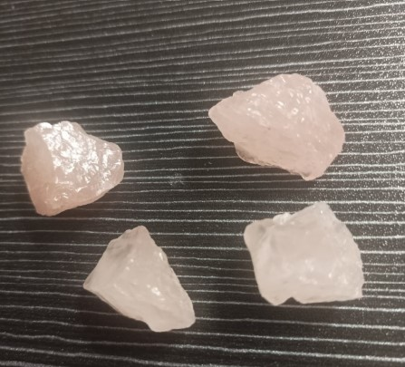
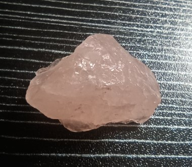

Il quarzo rosa è una varietà traslucida e rosata del quarzo, con formula SiO₂ (biossido di silicio). La sua caratteristica colorazione rosa pallido, che varia dal rosa tenue al rosa-lavanda, è dovuta principalmente a inclusioni microscopiche di fibre di dumortierite (un silicato di alluminio e boro) o, in alcuni casi, a tracce di fosfato o manganese. A differenza di altre varietà di quarzo, il colore del quarzo rosa è spesso metamittico e può sbiadire se esposto a luce solare intensa per lunghi periodi.
Il quarzo rosa si forma tipicamente in pegmatiti granitiche e in vene idrotermali, spesso in associazione con feldspati, miche e tormaline. La sua struttura è massiccia o granulare; i cristalli ben formati e trasparenti sono rari. È una delle gemme più amate per la sua delicatezza cromatica e la sua energia sottile, utilizzata da secoli in gioielleria e in pratiche di benessere emotivo.
Era considerato nell’antichità un simbolo dell’amore incondizionato, legato al mito di Adone e Afrodite, che lo avrebbero colorato col proprio sangue. Secondo la leggenda, la dea dell’amore, ferita mentre cercava di salvare il giovane Adone, mescolò il proprio sangue con le lacrime e da quell’unione nacque il quarzo rosa, eterno messaggero di passione e tenerezza.
In cristalloterapia, il quarzo rosa è la pietra dell’amore e del perdono. Agisce sul piano emotivo, aprendo il cuore alla dolcezza, alla riconciliazione e all’accoglienza di sé e degli altri. La sua energia aiuta a dissolvere le tensioni e a favorire relazioni sane e autentiche.
Posizionato sul quarto chakra (Anahata), favorisce l’equilibrio emotivo, lenisce le ferite interiori, stimola l’empatia e la fiducia, e diffonde un’energia pacifica e protettiva.

Il quarzo rosa è da sempre considerato un alleato prezioso per chi desidera guarire ferite antiche, imparare ad amare se stessi e donare amore senza condizioni. La sua vibrazione pacifica aiuta a sciogliere i blocchi emotivi e a favorire la riconciliazione dopo un conflitto. Molte tradizioni lo usano per attirare nuove amicizie, rinnovare coppie in crisi e proteggere i bambini con un’energia materna e accogliente.
Tenere un quarzo rosa sul comodino o vicino al letto si ritiene rafforzi i legami affettivi e favorisca un sonno sereno, allontanando incubi e paure notturne. In ambiente domestico, diffonde una frequenza armonizzante che trasforma gli spazi in rifugi di pace.
- Amore incondizionato e perdono
- Guarigione emotiva e autostima
- Rafforza legami affettivi e amicizia
- Porta pace e serenità
- Sul comodino per amore e sogni sereni
- Sul chakra del cuore durante la meditazione
- In camera da letto o in soggiorno
- Come gioiello per attrarre dolcezza
“Era considerato nell’antichità un simbolo dell’amore incondizionato, legato al mito di Adone e Afrodite, che lo avrebbero colorato col proprio sangue.
In cristalloterapia, il quarzo rosa è la pietra dell’amore e del perdono. Agisce sul piano emotivo, aprendo il cuore alla dolcezza, alla riconciliazione e all’accoglienza di sé e degli altri.
Tenere un quarzo rosa sul comodino o vicino al letto si ritiene rafforzi i legami affettivi.
Posizionato sul quarto chakra (Anahata), favorisce l’equilibrio emotivo, lenisce le ferite interiori, stimola l’empatia e la fiducia, e diffonde un’energia pacifica e protettiva.”

Cura e purificazione
Pulisci il quarzo rosa con acqua tiepida e sapone neutro. Evita l'esposizione prolungata alla luce solare diretta, che potrebbe far sbiadire il suo delicato colore. Ricaricalo al chiaro di luna o su un geodo di ametista. È ideale per essere tenuto vicino al cuore.
Giacimenti e varietà
I principali giacimenti di quarzo rosa si trovano in Brasile, Madagascar, India, Sudafrica e Sri Lanka. Le varietà più pregiate sono quelle con un rosa intenso e trasparenza vitrea. Esiste anche il “quarzo rosa stellato” (raro, con effetto asteria).
Scienza e simbolo
La mineralogia spiega il colore rosa con inclusioni nanometriche di dumortierite; la tradizione lo associa all’amore universale. Un perfetto connubio tra microgeologia e grandi emozioni, che ispira da millenni poeti, artisti e terapeuti.